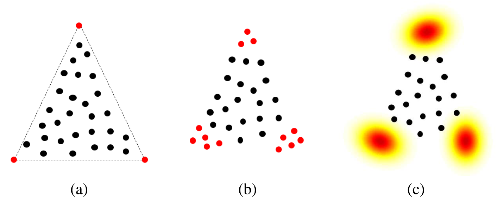

NCM-based unsupervised algorithm for hyperspectral image unmixing
This paper presents an unsupervised Bayesian
algorithm for hyperspectral image unmixing, accounting for
endmember variability. The pixels are modeled by a linear
combination of endmembers weighted by their corresponding
abundances. However, the endmembers are assumed random
to consider their variability in the image. An additive noise is
also considered in the proposed model, generalizing the normal
compositional model. The proposed algorithm exploits the whole
image to benefit from both spectral and spatial information.
It estimates both the mean and the covariance matrix of each
endmember in the image. This allows the behavior of each
material to be analyzed and its variability to be quantified in
the scene. A spatial segmentation is also obtained based on
the estimated abundances. In order to estimate the parameters
associated with the proposed Bayesian model, we propose to
use a Hamiltonian Monte Carlo algorithm. The performance of
the resulting unmixing strategy is evaluated through simulations
conducted on both synthetic and real data.

Fig. 1. Simplex representation for (a) endmembers without variability, (b) endmembers as a finite set (or bundle) and (c) endmembers as a distribution.
The algorithm and the main results are detailed in a paper published in IEEE Trans. Image Processing in 2015.
- article
 [ .pdf - 4.5Mo ].
[ .pdf - 4.5Mo ].
The corresponding Matlab codes are available below.
- matlab codes
 [ .zip - 1.7Mo ].
[ .zip - 1.7Mo ].